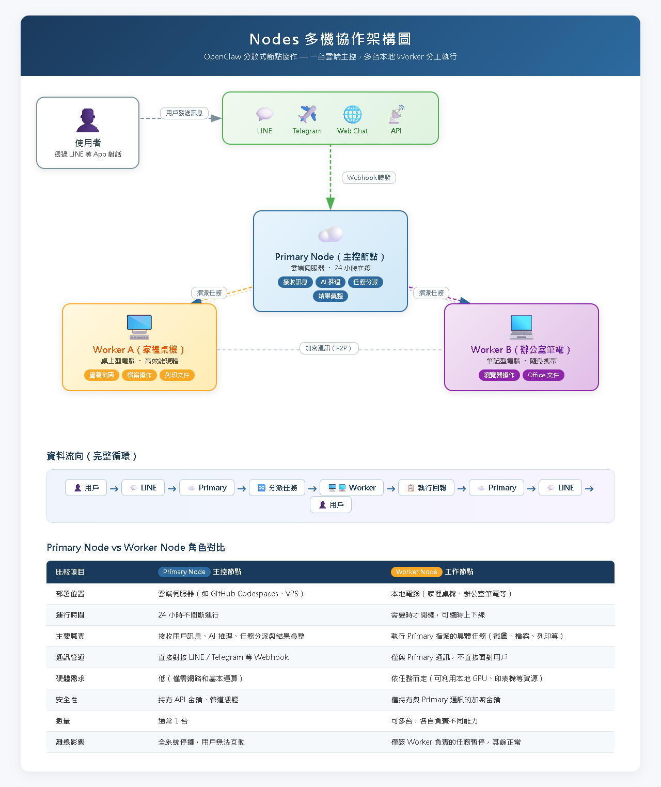
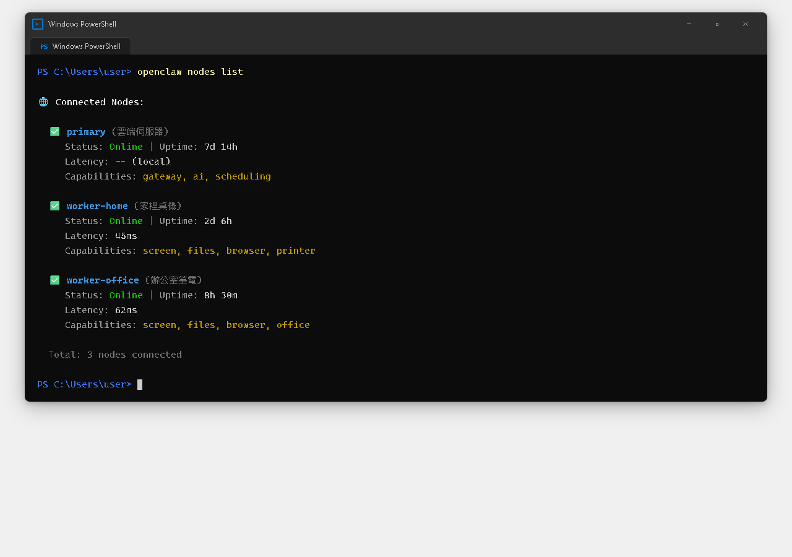
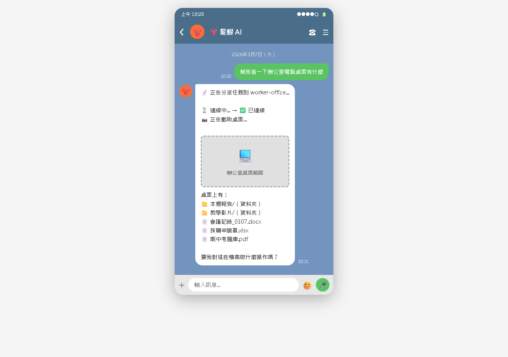

AI Agent 自主代理三王實戰
讓多台機器上的龍蝦組成一個網路，互相合作——家裡桌機、辦公室筆電、雲端伺服器，統統串在一起
你的龍蝦現在只住在「一台電腦」上。但如果你有好幾台電腦呢？Nodes 功能讓你把多個節點串在一起，形成一個「龍蝦網路」。

| 情境 | 單機的限制 | 多節點的解法 |
|---|---|---|
| 電腦關機就斷線 | 龍蝦下線，無法接收訊息 | 雲端節點 24hr 接收，本機負責重工作 |
| 多台電腦要管理 | 每台各自裝龍蝦，互不相干 | 多節點串聯，統一管理 |
| 運算效能不夠 | 小筆電跑 AI 很慢 | 把 AI 運算丟給效能好的節點 |
| 多人協作 | 每人各自操作 | 龍蝦之間可以互相傳遞任務 |
比喻：公司的總經理
比喻：各部門的員工
┌─────────────┐
│ LINE 訊息 │
└──────┬──────┘
│
┌──────▼──────┐
│ Primary │ ← 主控節點（雲端伺服器）
│ 接收訊息 │ 24 小時在線
│ 分派任務 │
└──┬───────┬──┘
│ │
┌──────▼──┐ ┌──▼──────┐
│ Worker A │ │ Worker B │
│ 家裡桌機 │ │ 辦公室筆電│
│ 跑 AI 運算│ │ 操作檔案 │
└─────────┘ └─────────┘
3 / 10
每個工作節點可以宣告自己的「能力」，讓主控知道該把什麼任務分派給它：
# NODE.md（工作節點的設定檔） ## 節點名稱 家裡桌機 ## 能力 - desktop-agent（可操控瀏覽器和檔案） - gpu-compute（有好顯卡，可跑本地 AI） - file-access（可存取家裡的 NAS） ## 在線時段 - 平日：18:00-23:00 - 假日：全天
分給「家裡桌機」（有 desktop-agent 能力）
分給「家裡桌機」（有 GPU）
不分給「家裡桌機」（可能關機了），改由雲端處理
# 啟用 Nodes 功能 openclaw config set nodes.enabled true # 設定自己為 Primary openclaw config set nodes.role primary # 產生節點金鑰（讓其他節點能安全連線） openclaw nodes init
🔑 Nodes 初始化完成！ 節點 ID：node-abc123 連線金鑰：sk-nodes-xxxxxxxxxxxxxxxx ⚠️ 請把連線金鑰複製給你的工作節點。 這個金鑰只顯示一次，請妥善保管。
# 啟用 Nodes 功能 openclaw config set nodes.enabled true # 設定自己為 Worker openclaw config set nodes.role worker # 連線到主控節點 openclaw nodes join --primary https://你的主控域名:18789 --key sk-nodes-xxxxxxxxxxxxxxxx
✅ 已成功連線到主控節點！ 主控：https://lobster.你的域名.com:18789 我的節點 ID：node-def456 我的角色：Worker 延遲：32ms5 / 10

openclaw nodes list
🌐 Nodes 網路狀態：
[Primary] node-abc123 — 雲端伺服器
狀態：✅ 在線
IP：xxx.xxx.xxx.xxx
運行時間：3 天 2 小時
[Worker] node-def456 — 辦公室筆電
狀態：✅ 在線
延遲：32ms
能力：file-access, browser, office-tools
在線時段：平日 09:00-18:00
你（LINE）：幫我看看辦公室電腦桌面上有什麼檔案
龍蝦：📡 分派任務到「辦公室筆電」...
📁 辦公室筆電桌面上的檔案：
- 會議簡報.pptx
- 本月報表.xlsx
- 專案進度.docx
共 3 個檔案。
6 / 10

| 節點 | 角色 | 位置 | 負責什麼 |
|---|---|---|---|
| GitHub Codespaces | Primary | 雲端 | 接收 LINE 訊息、基本對話 |
| 家裡桌機 | Worker | 家裡 | AI 運算、瀏覽器操控、檔案管理 |
場景：你在外面用手機
你（LINE）：今天天氣如何？
龍蝦：☀️ 台北 28°C，晴天。（由雲端節點回答）
你（LINE）：幫我看看家裡電腦桌面上那份報告的內容
龍蝦：📡 分派到「家裡桌機」...
📄 report.docx 摘要：
...（內容摘要）
你（LINE）：辦公室電腦上的專案進度更新到哪了？
龍蝦：📡 詢問「辦公室筆電」...
📋 專案進度（截至今天 15:00）：
- 前端開發：75% | 後端 API：90% | 測試：40%
你（LINE）：把那份進度報表也複製到家裡電腦的桌面
龍蝦：📡 從「辦公室筆電」下載...
📡 上傳到「家裡桌機」...
✅ 已複製到家裡桌機的桌面。
場景：你是專案經理，朋友 A 是設計師，朋友 B 是工程師
你（LINE）：幫我問 A 的龍蝦，設計稿完成了嗎？
龍蝦：📡 詢問「A 的工作站」...
🎨 A 的龍蝦回報：首頁設計稿已完成，共 5 個頁面。
你（LINE）：好，把設計稿轉給 B 的龍蝦，請它開始切版
龍蝦：📡 轉派任務到「B 的工作站」...
💻 B 的龍蝦回報：收到設計稿，開始切版。
預計完成時間：明天下午。
| 項目 | 說明 |
|---|---|
| 連線加密 | 節點之間的通訊使用 TLS 加密，不用擔心被竊聽 |
| 金鑰管理 | 連線金鑰只在 nodes join 時使用一次，之後用節點 ID 認證 |
| 防火牆 | 工作節點不需要開放 Port，它是主動連出去的 |
| 斷線重連 | 工作節點斷線後會自動嘗試重連（間隔 30 秒） |
一個 Nodes 網路最多支援 5 個工作節點
跨節點的檔案傳輸預設上限 100MB
工作節點不能直接回覆使用者，必須透過主控節點
任務分派邏輯還比較基礎，不像企業級任務佇列
Primary 主控節點 + 多個 Worker 工作節點，形成「龍蝦網路」。
openclaw nodes init 初始化主控 + openclaw nodes join 加入工作節點。
NODE.md 定義每個節點的能力和在線時段，主控按能力分派任務。
家庭+雲端、辦公室+家裡、多人協作——讓龍蝦不再只住在一台電腦裡。
📖 下一章預告：CH20 讓龍蝦打電話給你
龍蝦跟你的互動一直都是文字。有沒有可能用「說的」？不是語音辨識轉文字，而是真的打電話跟龍蝦聊天！